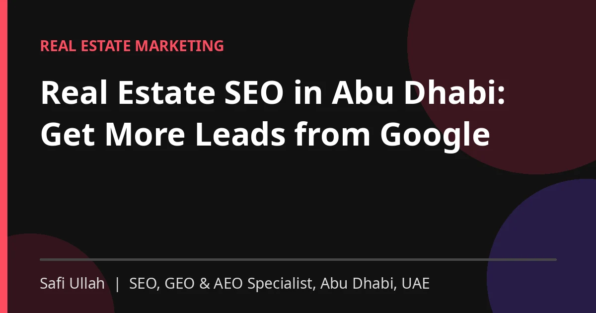

Real Estate SEO in Abu Dhabi: How Agencies Get More Leads from Google

Short answer: property seekers search by area and property type, not by agency name. The agencies that win leads are the ones with a useful page for every community they serve, a complete Google Business Profile, and content that answers real buyer questions in English and Arabic.
How people actually search for property in Abu Dhabi
Nobody types "real estate agency" first. They search for the thing they want: an apartment on Al Reem Island, a villa in Khalifa City, an office near the Corniche. Searches look like "2 bedroom apartment Yas Island" or "villa for sale Saadiyat". If your website has no page that matches those searches, Google has nothing to show, and the lead goes to a portal or a competitor.
Build one page per community you serve
The core of real estate SEO is the area page. For each community you actively work in, create one strong page, not ten thin ones:
- A clear title and heading that name the area, for example "Apartments for Rent in Al Reem Island".
- Honest, useful detail: building names, typical layouts, nearby schools, beaches, malls and commute notes.
- Your current listings for that area, kept up to date.
- A simple enquiry form or WhatsApp button on every page.
Do not copy area descriptions from other sites. Duplicate content is easy for Google to ignore, and AI search tools skip it too.
Google Maps matters as much as your website
Many property searches end on Google Maps, especially "real estate agency near me" and area visits. Your Google Business Profile should have the right category, correct phone number, office photos and a steady flow of real client reviews. Reply to every review, good or bad. It shows activity and builds trust before the first call.
Write for buyers and tenants, in English and Arabic
Abu Dhabi property seekers search in both languages. Guides that answer real questions, like service charges, the buying process for expats, or what Ejari-style registration applies where, bring in visitors who are close to a decision. Start in the language your best clients use, then add properly translated pages. Avoid machine-translated duplicates; they read badly and rank badly.
AI search is the new first impression
More people now ask ChatGPT, Gemini or Google's AI Overviews questions like "is Yas Island good for families" before they ever open a listing site. Clear, factual, well-structured pages are what these tools can quote. The same habits that help SEO help you appear in AI answers: descriptive headings, direct answers first, accurate details. More on this in my SEO, AEO and GEO guide.
What to avoid
- Publishing hundreds of near-identical listing pages with no unique text.
- Buying links or fake reviews. Both can get a site or a profile penalized.
- Relying only on portals. Portals are rented space, and every competitor is beside you there.
Conclusion
Real estate SEO in Abu Dhabi is not tricks. It is a page for every community you serve, accurate business information, helpful content in the languages your clients search in, and steady reviews. Do that consistently and Google becomes a reliable source of leads next to your ads. Details on my SEO service for Abu Dhabi businesses.
Frequently asked questions
Do property portals replace our own website?
No. Portals are rented space with every competitor beside you. Your own website builds an asset you control and can rank for area and property-type searches that portals do not target for your brand.
How long does real estate SEO take in Abu Dhabi?
It depends on your starting point and competition. No honest specialist can promise a date. Consistent area pages, a complete Google Business Profile and steady reviews are what move rankings over time.
Should our content be in English or Arabic?
Ideally both. Buyers and tenants in Abu Dhabi search in both languages. Start with the language your best clients use, then add the other as properly translated pages, not machine-translated duplicates.